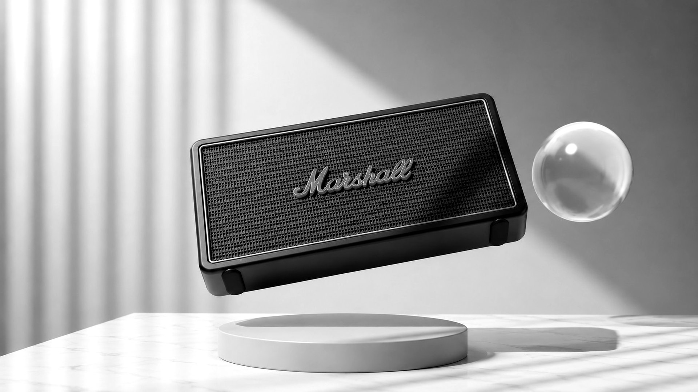
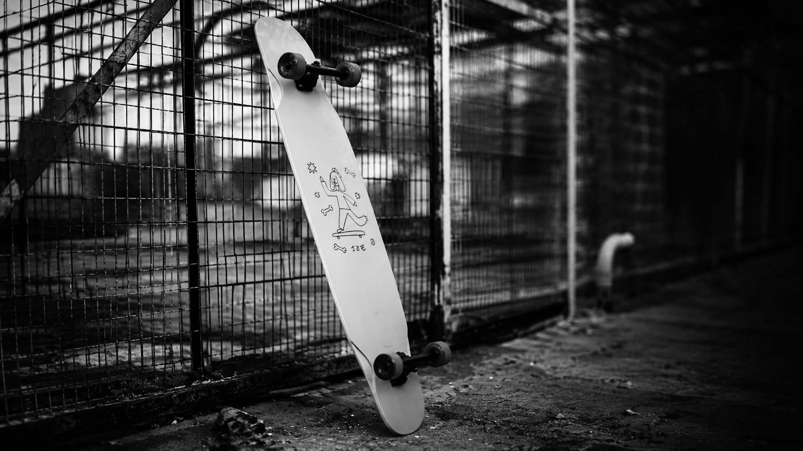
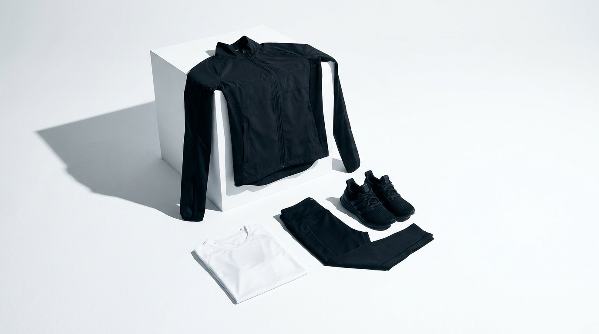
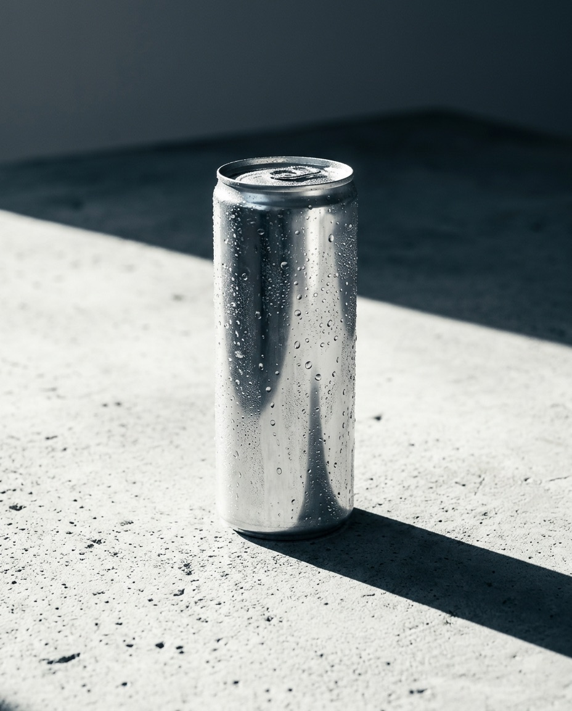
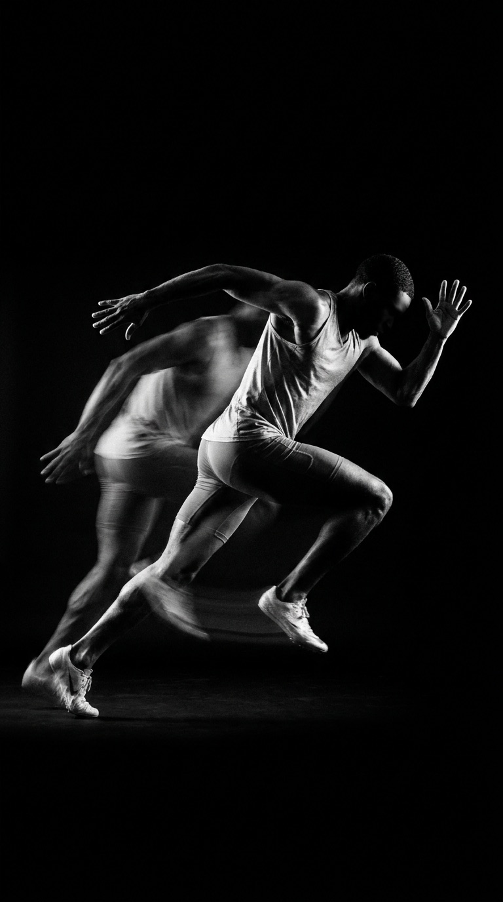

© 2026 HUMAN OUTPUT
Creative Content & Production Studio

Sound in Motion
Product Film & CGI

Social Content System & Reels

Campaign & Art Direction

Product Launch & Stills

Content System & Film
Draft content. Placeholders are marked.